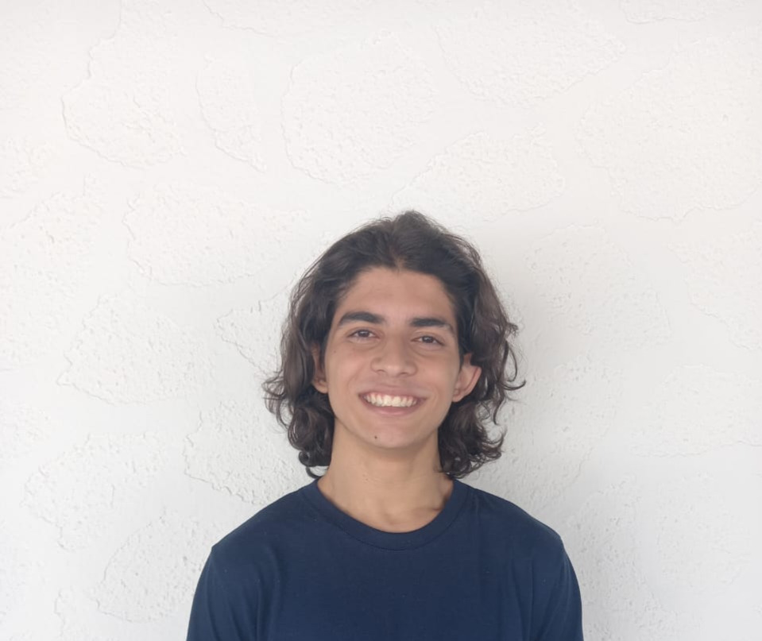

Olá, eu sou o Eduardo Paz
Estudante de
Graduando no ICMC-USP e na EESC-USP em São Carlos (5º Semestre). Apaixonado por desvendar como o software interage com o hardware através de arquiteturas eficientes.

Sobre Mim
A tecnologia para mim vai muito além das camadas superficiais; é sobre entender cada bit.
Sou estudante de Engenharia da Computação no ICMC-USP, onde desenvolvo uma base sólida em computação de baixo nível e modelagem matemática. O meu percurso académico no 5º semestre permitiu-me aprofundar conhecimentos em Programação Linear Inteira (PLI) e análise de sinais.
Gosto de trabalhar em equipe, tendo colaborado em diversos projetos técnicos. Além do código, dedico-me à criação de Pixel Art para jogos, unindo a precisão técnica à criatividade visual. Utilizo Fedora como o meu ambiente principal de desenvolvimento, explorando sempre novas ferramentas de rede e segurança.
- Instituição: USP - São Carlos (ICMC)
- Handle: dudpaz
- Interesses: Arquitetura RISC-V, Python/C#, C/C++
Foco Atual
Atualmente focado na integração e qualidade de software (QA) no projeto SIBiSC e no estudo avançado de algoritmos FFT para processamento de sinais.
Habilidades Técnicas
RISC-V Assembly & Arquitetura
C / C++ & Programação de Sistemas
Sinais e Sistemas
Web Development (React, Vite, Node)
Python & MATLAB
GameDev na Unity
Soft Skills & Hobbies
Projetos de Destaque
Inventário do Aventureiro simplérrimo
Jogo desenvolvido inteiramente em Assembly RISC-V para explorar conceitos fundamentais de arquitetura de processadores e gerenciamento de memória. Projeto focado na eficiência e execução nativa.
SIBiSC - Plataforma Integrada
Aplicação web moderna utilizando React e Vite. Responsável pela integração de qualidade (QA) e desenvolvimento de componentes front-end escaláveis. Colaboração em ambiente profissional com Git/GitHub.
Contato
Estou sempre aberto a novos desafios e colaborações técnicas.
Localização
São Carlos, SP - ICMC-USP
dudpaz@usp.br
Redes Profissionais
github.com/dudpaz